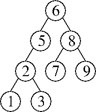
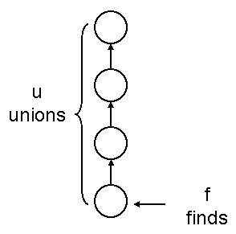

Problem 1. (11 points) A miscellany.
b. The insert operation negates each key before inserting it into the min-heap. The removeMax operation removes the minimum key from the min-heap and negates it before returning it.
c. Replace SensorIn with a stub that generates faked earthquake data.
d. o1.hashCode() == o2.hashCode().
e. Add a total field to the DList class that maintains the sum of all the items in the list. The method setItem and every method that inserts or removes a listnode must update total accordingly. The average method returns total / size.
f. Its running time is in Θ(log n).
g. The nodes L and P are pruned.
Problem 2. (13 points) Sorting.
a.
5 1 0 9 2 6 3
5 2 0 9 1 6 3
5 2 6 9 1 0 3
5 2 6 9 1 3 0
0 2 6 9 1 3 5
0 2 6 9 5 3 1
0 5 6 9 2 3 1
0 1 6 9 2 3 5
0 1 6 9 5 3 2
0 1 2 9 5 3 6
0 1 2 9 5 6 3
0 1 2 3 5 6 9
0 1 2 3 9 6 5
0 1 2 3 5 6 9
0 1 2 3 5 9 6
0 1 2 3 5 6 9
b. Replace the conditional “arr[i] <= arr[j]” with “arr[i] < arr[j]”.
c. Replace
for (int j = 0; j < i; j++) {
if (arr[i] <= arr[j]) {
with
for (int j = i; j >= 0; j--) {
if (j == 0 || arr[i] >= arr[j - 1]) {
d. The variant with bucket sort uses Θ(q) additional memory, whereas the variant with couting sort uses Θ(q + n) additional memory.
e. The input array has no duplicate keys.
f. Its expected running time is in Θ(n2).
g. Preprocessing part: Sort the old integers (any way you like) and store them in an array. Create an array of buckets (or counts), one for each old integer, with each bucket having a queue that contains the old integer (or each count being 1).
Online part: For each new integer, use binary search on the array to find the matching old integer. The binary search tells us the index of that integer's queue. Store the new integer in the corresponding queue (or increase its count). After all the new integers have been processed, walk through all the queues to generate the output list as in bucket sort (or use the counts array as in counting sort to generate the output list).
Problem 3. (10 points) Splay Trees.
a. 
b. find(1), then find(3).
c. The worst-case running time is in Θ(n2).
d. Create two modified find() methods called findLeft() and findRight(). Intuitively, findLeft(x) performs the same search as find(x - ε) for an infinitesimally small number ε. How do we implement that? The method findLeft(x) searches the tree for the key x. Whenever it finds one, it goes to that key's left child (because x - ε is less than x) and continues to search for x.
The last node the search visits will be either the leftmost x in the tree—that is, the first x in an inorder traversal—or the key immediately preceding the first x in the inorder traversal. The method splays that node to the root. After the splaying, all the nodes in the root's left subtree are strictly less than x, and all the nodes in the root's right subtree are greater than or equal to x. (The root itself could be either.)
Symmetrically, findRight(y) performs the same search as find(y + ε) for an infinitesimally small number ε. The method findRight(y) searches the tree for the key y. Whenever it finds one, it goes to that key's right child and continues to search for y.
Now, we just modify the algorithm in Lecture 40 by replacing the calls to find with findLeft(x) and findRight(y).
[Note: this question was probably way too hard. So we are also accepting answers that modify the data structure in minor ways. The simplest one is to modify the splay tree so that all the duplicate keys are stored in a single treenode, in some sort of list.]
Problem 4. (5 points) Disjoint Sets.
a. The worst-case running time is in Θ(fu + f + u). (We accepted Θ(fu) for full marks, but it's nice to write Θ(fu + f + u) because it encompasses the cases where u = 0 as f approaches infinity and vice versa.)

b. Assign each parent pointer a timestamp, an extra field in each node that states the “time” at which its parent reference was set to a non-null value. Each union operation creates one non-null parent reference with a timestamp. The find operation never traverses a parent reference whose timestamp is newer than the parameter time.
Problem 5. (7 points) Graphs.
a. The worst-case running time is in Θ(ev2).
b. First, here's a recursive algorithm for determining whether there is a path of length k from a vertex u to a vertex w in a graph G = (V, E). The base case is k = 0, for which a path exists only if u = w. Otherwise (k > 0), for each edge (u, v) ∈ E, recursively determine whether there is a path of length k – 1 from v to w. If any one of these edges has such a path, then there is a path of length k from u to w.
(Of course, there are faster algorithms; we studied one in Lab 13.)
To determine if G has a cycle of length k, call this algorithm once for each vertex v ∈ V, each time asking whether there is a path of length k from v to itself.
c. Here are two acceptable answers.
Problem 6. (7 points) Increasing a Key in a Binary Heap.
[Note: most student answers to this question were more than twice as long as ours, and some were two full pages long. Which makes this question an unusually excellent litmus test of programming skill. If you first solve it yourself, then carefully study our solution and ask yourself why yours is longer, you might learn a lot about how to be a better programmer.]
public void increaseKey(int newKey) { // Increase key of this node to newKey.
if (newKey <= key) return; // Method cannot be used to decrease the key.
key = newKey;
if ((left != null) && (key > left.key) && ((right == null) || (left.key <= right.key))) {
key = left.key;
left.increaseKey(newKey);
} else if ((right != null) && (key > right.key)) {
key = right.key;
right.increaseKey(newKey);
}
}